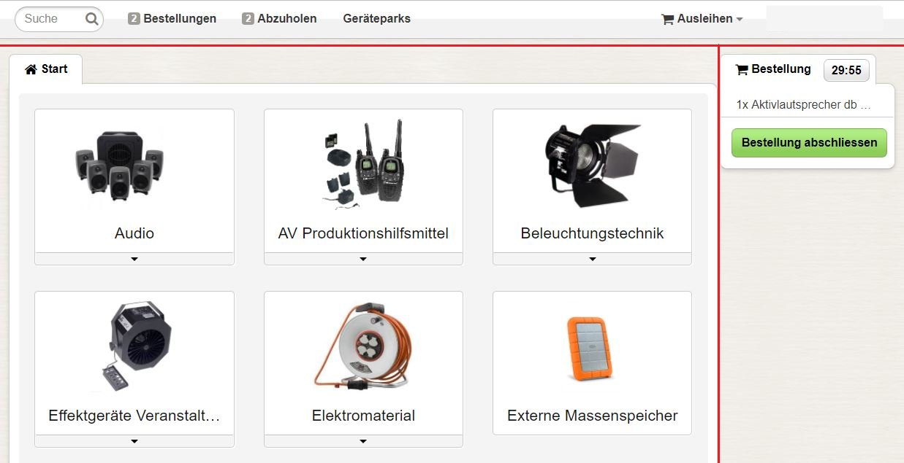

Einleitung
Leihs dient der Verwaltung von Geräte-Ausleihen. Der Katalog des Inventars steht den Kunden auf einer Website zur Verfügung. Diese können nach erfolgreicher Suche eine verbindliche Reservationsanfrage tätigen, die anschliessend noch von den Ausleihe-Verwaltern genehmigt werden muss. Üblicherweise wird der bestellte Artikel danach zur Abholung am Schalter bereit gestellt.
Erläuterungen zu den vielfältigen Funktionen von Leihs finden Sie in den Kapiteln dieser Dokumentation:
- Suchen & Bestellen
- Abholen & Zurückbringen
- Genehmigen & Herausgeben
- Inventarisieren & Verwalten
- Admin
Wichtige Begriffe
- Gegenstand: Ein physischer Artikel in Leihs.
- Modell: Jeder Gegenstand ist Instanz eines Modells. Modelle dienen der Strukturierung des Leihs-Katalogs.
- Lizenz: Für eine Software können ausleihbare Lizenzen erfasst werden (vgl. Gegenstand).
- Software: Ein virtueller Artikel in Leihs (vgl. Modell).
- Paket: Mehrere Gegenstände können als Paket gebündelt werden. Das Paket verhält sich ähnlich wie ein Modell und wird mit einer eigenen Inventarnummer versehen.
- Kategorie: Ordnet Gegenstände nach Verwendungszweck und Funktionalität.
- Inventarnummer: Jeder Gegenstand des Leihs-Inventars ist anhand einer Inventarnummer identifizierbar.
- Option: Gegenstände von ergänzender Funktionalität und geringem Wert sind als Option ohne eigene Inventarnummer registriert (beispielsweise Adapter oder Ladegeräte).
- Gerätepark: Kataloge von Modellen und Gegenständen werden als Geräteparks erfasst.
- Gruppen: Mithilfe von Gruppen können Kunden bevorzugt behandelt werden.
Leihs-Startseite
Die Startseite ist in drei Bereiche unterteilt:
- Navigationsleiste (oben): Mit der Suchfunktion können Sie mithilfe von Stichwörtern den gesamten Leihs-Katalog durchsuchen. "Bestellungen" führt Sie zur Übersicht über Ihre bestellten Gegenstände, "Abzuholen" zu bereits genehmigten Bestellungen. "Geräteparks" zeigt Ihnen die entsprechende Beschreibung an. Falls Sie zum Verwalten des Inventars berechtigt sind, können Sie rechts zwischen Ausleihen und Verwalten wechseln.
- Kategorien (links): Klicken Sie auf eines der Kategorie-Bilder, um die zugehörigen Gegenstände anzusehen. Wenn Sie den Mauszeiger über das Dreiecksymbol einer Kategorie bewegen, können Sie direkt zu einer Subkategorie gelangen.
- Warenkorb (rechts): Hier sehen Sie die von Ihnen vorgemerkten Gegenstände sowie deren Reservationszeit. Sie können Gegenstände für 30min vormerken, ohne diese definitiv zu bestellen. Klicken Sie auf "Reservation abschliessen", um zum Bestätigungsdialog Ihrer Bestellung zu gelangen.
